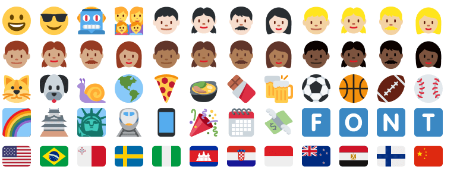
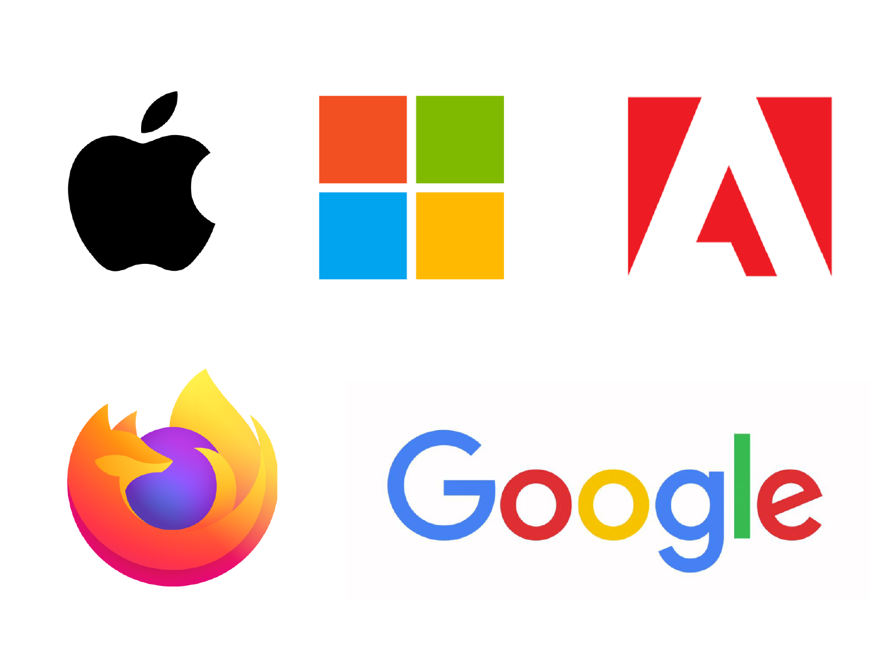
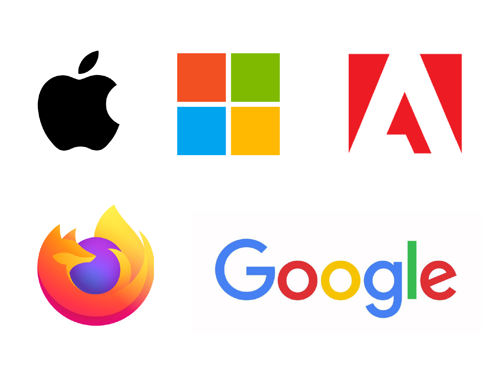
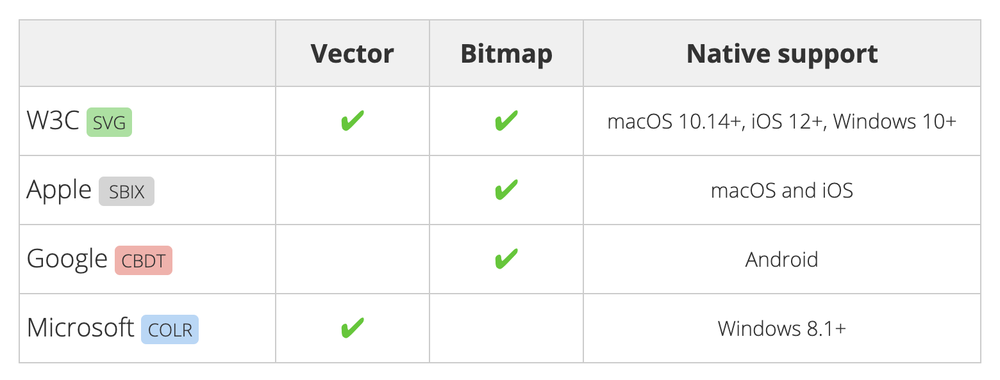

The OpenType-SVG font format was initially designed by Mozilla & Adobe and became an industry standard in early 2016, when other big players including Microsoft & Google agreed on a single format to support color fonts.
All of them (including Apple) have previously developed and implemented their own proprietary color formats to display emojis on their operating systems, while many other companies built other custom color font technologies for the gaming, video or print industries. Therefore, the emojis that we use on our smartphones and computers are actually shipped as color fonts and they are predecessors of color fonts.



Twemoji: Open source emoji font by Twitter
Google’s PNG images (CBDT/CBLC table)
Google proposed an implementation which uses PNG images for the glyphs. The glyphs are simply replaced by good old images. This works fine for smaller icons, and obviously brings all the creative freedom of bitmap images, but doesn’t scale very well. Blow up a glyph big enough, and you’ll encounter blurred pixels. It’s also going to be hard, if not impossible, to change the color of the glyphs with CSS. Interesting is that they specify that there should be no GLYF table in their implementation — the table that holds the uncolored “normal” glyphs — so it looks like there’s no fallback for when this format isn’t supported.
Apple’s PNG images (SBIX table)
Apple proposed a proprietary system similar to Google’s. It uses PNG images, so it runs into the same scaling problems. Support for this format is in iOS4+ and OSX 10.7+. This spec hasn’t officially been published by Apple and doesn’t seem to be supported outside the Apple ecospace.
Microsoft’s overlapped glyphs (COLR/CPAL table)
Microsoft proposed a simple idea that works with what’s already well implemented in OpenType: normal glyphs. Each glyph has one or more accompanying color glyphs, and when they are overlapped they create the final colored glyph. It doesn’t quite have the versatility of PNG images or SVG — it’s just solid shapes on top of each other.
Mozilla and Adobe’s SVG (SVG table)
These two web giants got together for the most ambitious format: SVG in OpenType.
Summary
SBIX (Apple)
– Bitmap-based with native support in macOS and iOSCBDT (Google)
– Bitmap-based with native support in AndroidCOLR (Microsoft)
– Vector-based with Windows 8.1+ native supportOpenType-SVG (Adobe and Mozilla)
– Supports vector shapes as well as bitmap images
